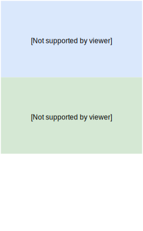
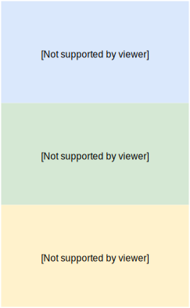
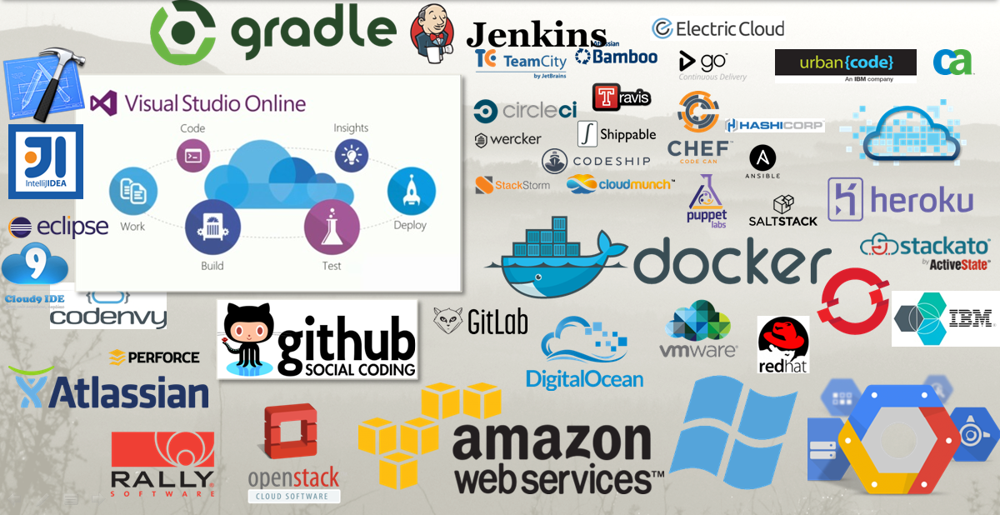
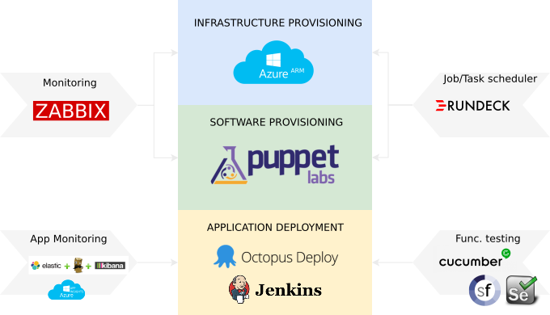
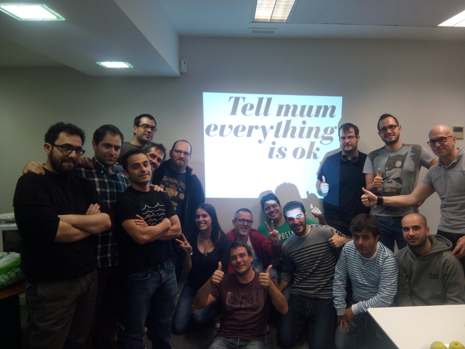
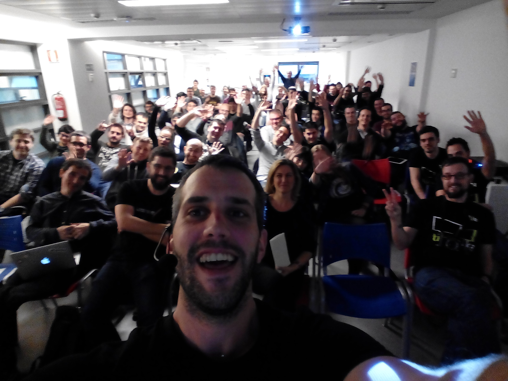

Splitting Automation
Infrastruture provisioning

Software provisioning
Application deployment
Monitoring

Application Monitoring

Functional Testing

Job Scheduler

Why should I automate?
“Part of the inhumanity of the computer is that, once it is competently programmed and working smoothly, it is completely honest.”

Isaac Asimov
Why?
- Reliability: Fewer errors from manual processes
- Efficiency: SysAdmins/Ops will have time to do what they should do (improve processes, performance,...)
- Agility: Increased speed of product deliverability
- Repeatability: Don't waste time on doing what you already do
- Flexibilty: Ability to scale (Black Friday!!)
Before / After
| Before | After | |
|---|---|---|
| New server request | 4 days | 1h |
| Soft provisioning | 1 day | 1h |
| Server Documentation | 100% | |
| Deploy frequency | 2/3 per day | 5/15 day |
| Time to deploy | 1-3 hour | 5 min |
| Avg. Rejected deploys | 50% | 0% |
Look your best!
It's Selfie time
How?
People

Tools
Our Tools
Migration
Our experience
- 3 Data Centers: Europe, USA, Asia
- Before: 75 server per datacenter
- After: 170 server per datacenter
- High Availabilty
- Split of shared servers
- New products
- PaaS
- Redis => Redis as a Service
- MSMQ => ServiceBus
- IIS => Web App
Migration
Sci-Fi or Reality?
It's real!
Thanks !
Source: https://github.com/artberri/automation-talk-example
Thanks to you too, Ian Murdock, none of this would be possible without you